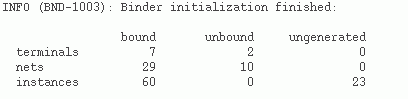
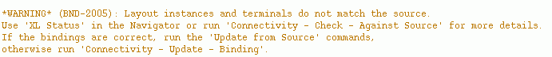

Device Correspondence Updates
For each schematic and layout pair, the correspondence between the components in the views is determined by the Layout XL binder engine.
-
Initial Binding
When Layout XL is started, the binder binds by respecting the existing bindings.This means only those bindings that were previously saved are retained when a new Layout XL session is started.
When components are generated in the layout, the system propagates the connectivity to the layout view and sets the correspondence between the generated instances and their schematic counterparts. This correspondence is reported in the CIW, as shown below, when you start Layout XL.
The report displayed above indicates some unbound terminals and nets in the design, suggesting the correspondence is not perfect. In such cases, an additional warning message is issued in CIW, as shown in the figure below, suggesting possible methods for improving the bindings.
 -
Incremental Binding
Device correspondence and connectivity information are updated incrementally by the system, whenever required, for example, when instances are created in the design. However, for incremental binding to occur, the layout device to be bound must have a single, unique connectivity match in the schematic with the same master.
Instances created in the layout by running Generate All From Source, Generate Selected From Source, or Generate Clones commands continue to be fully bound to the schematic.
Because the incremental binder is physical-connectivity-aware, instances connected by shapes that are not assigned to a net are recognized as interconnected. Therefore, when incrementally binding such instances, Layout XL automatically creates and assigns nets to the instance terminals, if required.
You can also choose to switch off the incremental binder, if required. To do this, you must set thebindIncrenvironment variable tonil. By doing so, any unbound layout instances or pins will remain unbound within the Layout XL session. On the other hand, if you setbindIncrConntonil, any unbound layout instances or pins will be bound by name even when the devices do not have exactly the same master or have different connectivity.
When you run the schematic editor Check and Save command during a Layout XL session, the binder is reinitialized to take account of any changes in the schematic connectivity. This can lead to the creation of new bindings between schematic and layout components. -
Ignoring Instances for Binding
If you have any unbound instances that you have edited and want to retain as unbound even after running incremental binding, you can set anignoreproperty on them. To do this right-click the instance and choose the Add Ignore shortcut command.
The selected instance will have an ignore property set due to which the instance will be ignored for binding. However, any existing bound instances will continue to get updated, if required, during incremental binding.
Alternatively, you can setbindIncrAddIgnoretot. This will set an ignore property on any unbound instances that have been edited and would otherwise be considered for binding during an incremental binder run.
After the ignore property is set, the instances become unavailable for all binding—initial and incremental. However, any unbound instances that have not been edited, will not have the ignore property set. Therefore, these instances will continue to be available for binding during the next binding run.
To remove theignoreproperty from an unbound instance to make it available for binding, right-click the instance and select the Remove Ignore shortcut command.
Related Topic
Return to top